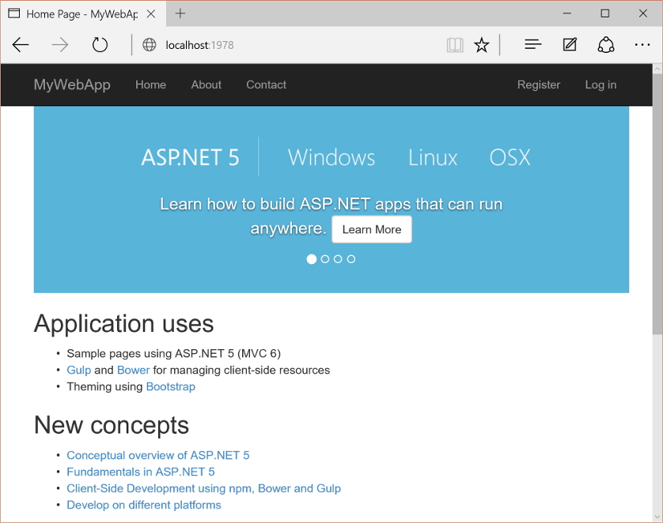

Building Projects with Yeoman¶
By Noel Rice, Scott Addie
Yeoman generates complete, running projects for a given set of client-tools. You may be overwhelmed by “feature-shock” for the latest glut of client-tools (NPM, Gulp, Angular, etc.) or have simply run out of time to work through each feature set, much less the details, of every client tool. Yeoman generates everything you need to get over your first hurdle, the “hello world” that demonstrates that a group of technologies function together.
Yeoman is an open-source tool that works like a Visual Studio project template, but targets a wide developer audience that ranges from Ruby, browser extensions, PhoneGap, Facebook React, jQuery Mobile, and Microsoft technologies like ASP.NET.
Yeoman is opinionated; it prescribes tools and best practices for your target technologies so you don’t have to decide “Use version X or Y?” or “What directory structure should I use?” Yeoman gets you started with a known-good project that runs.
The Yeoman command line tool yo works alongside a Yeoman generator. Generators define the technologies that go into a project. Here are a few sample generators:
- AngularJS Generator creates a starting point for a new Angular single page application.
- JQuery Generator creates the shell code for a jQuery plugin.
- Chrome App Generator generates everything you need to create an extension for the Chrome browser.
- The Flux-React generator creates an application based on Facebook’s Flux/React architecture.
- ASP.NET generator creates ASP.NET 5 DNX projects.
- You can even generate your own Yeoman generator.
- In this article:
Getting Started¶
The ASP.NET generator creates ASP.NET 5 DNX projects that can be loaded into Visual Studio 2015 or run from the command line. The generator creates the following project types:
- Empty Application: An empty Web application with minimal dependencies.
- Console Application: A DNX-based console application.
- Web Application: A complete MVC web application with a simple home page and examples for managing accounts and login.
- Web Application Basic: A simpler MVC web application lacking membership and authorization, among other advanced features which are found only in the Web Application generator.
- Web API Application: A Web API built with MVC.
- Nancy ASP.NET Application: A lightweight HTTP service with one module built using Nancy.
- Class Library: A DNX-based class library.
- Unit Test project: A simple XUnit test project.
This walkthrough demonstrates how to use Yeoman to generate an ASP.NET 5 web application.
- Follow the instructions on http://yeoman.io/learning/ to install yo and other required tools.
- On the command line, install the ASP.NET generator:
npm install -g generator-aspnet
Note
The –g flag installs the generator globally, so that it can be used from any path on your system.
- Create the new directory in which the project will be generated:
mkdir C:\MyYo
- On the command line, make the new directory the current directory:
cd C:\MyYo
- Run the
yocommand, providing theaspnetalias for the ASP.NET generator:
yo aspnet
- The generator displays a menu. Arrow down to the Web Application project type and press
Enterto select it:

- Provide an application name of “MyWebApp” and press
Enter:
Yeoman will scaffold the project and its supporting files. Suggested next steps are also provided in the form of commands.
Client-Side Build Support¶
The ASP.NET generator creates supporting files to configure client-side build tools. A Grunt or a Gulp task runner file is added to your project to automate build tasks for Web Application projects. By default, the generator creates gulpfile.js to run tasks. Running the generator with the --grunt argument generates Gruntfile.js instead:
yo aspnet --grunt
The generator also configures package.json to load Grunt or Gulp dependencies and adds bower.json and .bowerrc files to restore client-side packages using the Bower client-side package manager.
Building and Running from Visual Studio¶
You can load your generated ASP.NET 5 web project directly into Visual Studio 2015, then build and run your project from there.
- Open Visual Studio 2015. From the File menu, select .
- In the Open Project dialog, navigate to the
project.jsonfile, select it, and click the Open button. In the Solution Explorer, the project should look something like the screenshot below.

Note
Yeoman scaffolds a MVC web application, complete with both server- and client-side build support. Server-side dependencies are listed under the References node, and client-side dependencies in the Dependencies node of Solution Explorer. Dependencies are restored automatically when the project is loaded.

- When all the dependencies are restored, press F5 to run the project. The default home page displays in the browser.

Restoring, Building, and Hosting from the Command Line¶
You can prepare and host your web application using commands dnu (Microsoft .NET Development Utility) and dnx (Micorosft .NET Execution Environment).
Note
For more information on DNX, see DNX Overview
- From the command line, change the current directory to the folder containing the project (that is, the folder containing the project.json file):
cd C:\MyYo\MyWebApp
- From the command line, restore the project’s NuGet package dependencies:
dnu restore
- Also from the command line, build the project assemblies:
dnu build
- To run the development web server, use this dnx command:
dnx web
This will execute the corresponding web command in the commands section of the project.json file:
1 2 3 4 | "commands": {
"web": "Microsoft.AspNet.Server.Kestrel",
"ef": "EntityFramework.Commands"
},
|
The cross-platform Kestrel web server will begin listening on port 5000:
- Open a web browser, and navigate to http://localhost:5000.

Adding to Your Project with Sub Generators¶
You can add new generated files using Yeoman even after the project is created. Use sub generators to add any of the file types
that make up your project. For example, to add a new class to your project, enter the yo aspnet:Class command followed by the
name of the class. Execute the following command from the directory in which the file should be created:
yo aspnet:Class Person
The result is a file named Person.cs with a class named Person:
using System;
using System.Collections.Generic;
using System.Linq;
using System.Threading.Tasks;
namespace MyNamespace
{
public class Person
{
public Person()
{
}
}
}
Summary¶
Yeoman generates complete running projects for a wide range of technology combinations. The generated files can be loaded into Visual Studio. Task Runner Explorer and other Visual Studio tooling help configure and automate unfamiliar technologies in a familiar environment.